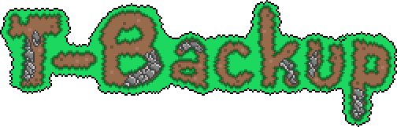
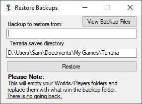
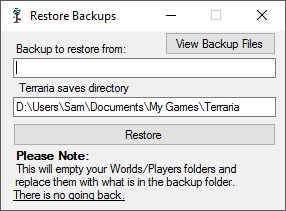
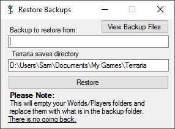
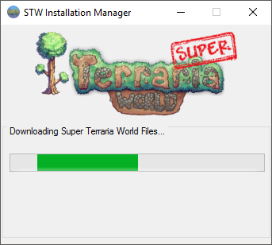
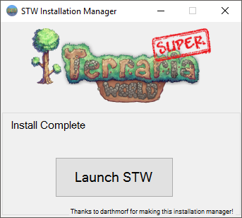
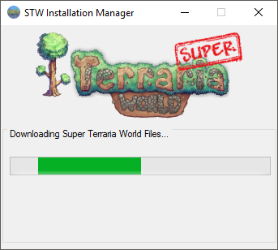
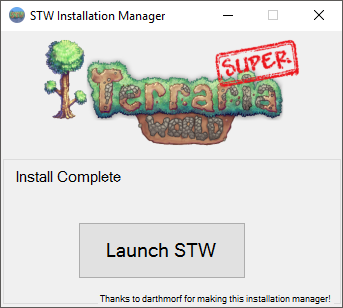

 

A TERRARIA BACKUP UTILITY PROGRAM
T-Backup is a program that backs up worlds and player files from the game Terraria. It supports multiple profiles to allow different locations for mods.
It is written in C#, and is intended to be run on Windows.
T-Backup does not require an installer, simply run the downloaded executable to start.
A new, improved version is currently in the works!

You can view the source code, as well as downloads via Github!
I'd love to hear any feedback - you can do so via The Official Forum Post or you can contact me directly.
  
 